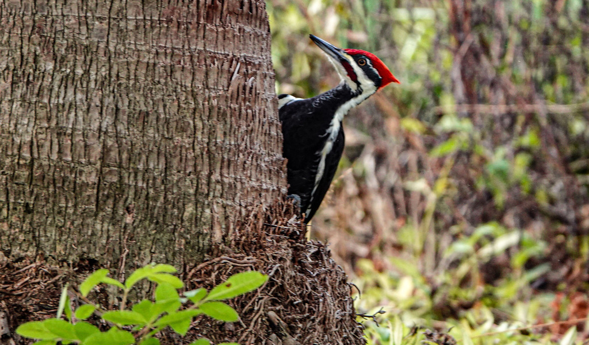

- A crow-sized woodpecker with a flaming red crest, hammering at a tree trunk — that is a pileated woodpecker, now the largest woodpecker in North America since the ivory-billed is almost certainly extinct.
- Listen before you look. Its loud, ringing "kuk-kuk-kuk" and deep, slow drumming carry through the woods well before the bird comes into view.
- The rectangular holes it chisels are a giveaway. Most woodpeckers make round holes; the pileated carves long, squared-off cavities to reach the carpenter ants it loves.
- It is also a quiet landlord. The old nest and feeding holes it abandons become homes for owls, ducks, and other animals that cannot dig their own.
Crow-sized, with a long neck and a pointed red crest.
Mostly black with bold white stripes on the face and neck; white shows under the wings in flight.
Males have a red "mustache" stripe; females show black there.
Large rectangular holes chiseled into tree trunks.
Loud and far-carrying: a ringing, laughing "kuk-kuk-kuk-kuk" that rises and falls, plus deep, resonant drumming on hollow wood used to claim territory.
A big black-and-white woodpecker with a tall red crest, working a tree trunk or flying with deep, slow wingbeats that flash white underwing patches. If you find fresh rectangular holes in a dead trunk, a pileated is likely nearby.
Mostly carpenter ants and wood-boring beetle larvae dug out of dead and dying wood, rounded out with other insects, wild fruits, and nuts.
Among the park's larger trees and any standing dead trunks. Listen for the loud laughing call and slow drumming, and scan big trunks for a crow-sized bird with a red crest.
Year-round resident. Often heard before it is seen; most active foraging in the morning.
Watch and enjoy from a distance, and please do not feed park wildlife. Give a foraging bird room and it will carry on working.

- © Rob Carr (CC-BY-NC), via iNaturalist